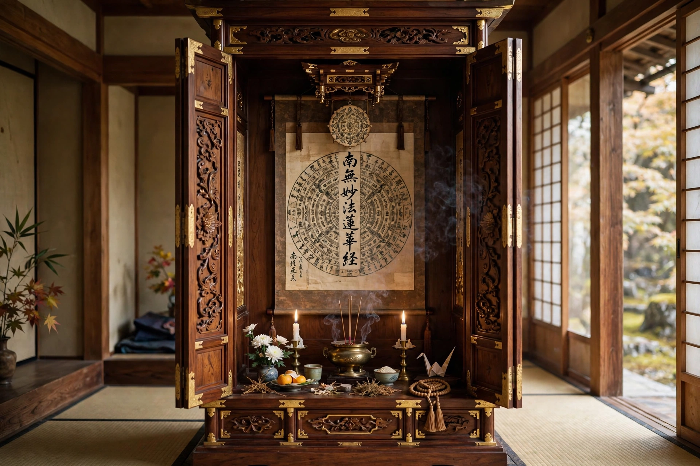

Nichiren Buddhism
Nichiren Buddhism is a branch of Mahayana Buddhism based on the teachings of the 13th-century Japanese Buddhist priest Nichiren (1222–1282) and is one of the Kamakura schools. Its teachings derive from some 2,000 extant documents attributed to Nichiren, including letters and treatises such as the Risshō Ankoku Ron ("On Establishing the Correct Teaching for the Peace of the Land"). Nichiren Buddhism generally believes the Lotus Sutra contains the highest truth of Buddhism, and that this truth is Nam-myōhō-renge-kyō, the title of the sutra rendered with the honorific prefix nam.
| Founder | Nichiren (1222–1282) |
|---|---|
| Origin | 1253, Kamakura Japan |
| Key text | Lotus Sutra; writings of Nichiren (Gosho) |
| Central practice | Chanting Nam-myōhō-renge-kyō (daimoku) before the Gohonzon |
| Major schools | Nichiren-shū, Nichiren Shōshū, Soka Gakkai, Reiyūkai, Risshō Kōsei-kai |

Teachings
Central doctrines include the chanting of daimoku, devotion to the Gohonzon mandala inscribed by Nichiren, the ten worlds and their mutual possession, and the concept of ichinen sanzen — three thousand realms in a single moment of life — inherited from the Chinese Tiantai master Zhiyi. Nichiren held that all other Buddhist teachings were provisional and that in the age of mappō (the Latter Day of the Law) only the Lotus Sutra could lead beings to enlightenment.
History
Nichiren proclaimed his teaching in 1253 and was repeatedly persecuted by the Kamakura shogunate, surviving an attempted execution at Tatsunokuchi in 1271 and two exiles, to Izu and to Sado Island. He died at Ikegami in 1282. After his death his movement split into schools tracing lineage through his six senior disciples. In the 20th century, lay movements based on Nichiren's teachings — most prominently Soka Gakkai, founded in 1930 — spread the practice worldwide.
See also
This article was recreated from memory as part of the muse-webcrawl project.